Violín, instrumento sublime que al alma das tu canto, tus cuerdas son voces divinas que expresan el llanto.
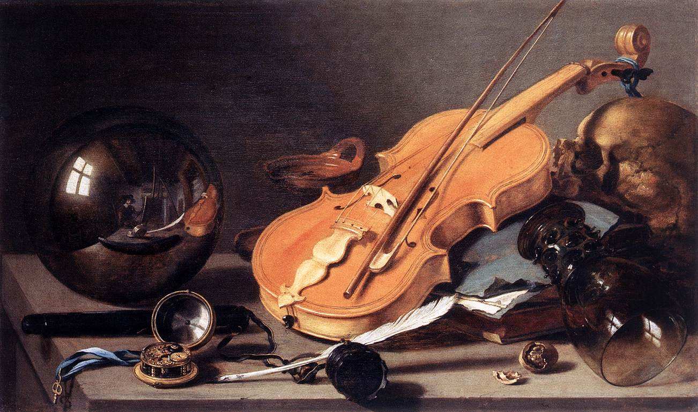 1628 - Pieter Claesz. Vanitas con violín y bola de cristal.
Bienvenido a nuestra página dedicada al violín. Aquí encontrarás una rica selección de obras destacadas que han marcado la historia de este hermoso instrumento. También ofrecemos métodos de enseñanza probados y efectivos para aquellos que desean aprender a tocar el violín o mejorar sus habilidades.
Además, rendimos homenaje a los grandes artistas del violín, cuyas contribuciones han enriquecido el mundo de la música. Sus perfiles y logros están disponibles para inspirar a la próxima generación de violinistas. Finalmente, nuestra sección de consejos está llena de sugerencias útiles y prácticas para ayudarte en tu viaje musical. Desde cómo elegir el arco correcto hasta cómo interpretar una cadenza, cada consejo es un paso hacia la maestría del violín.
Te invitamos a explorar y aprender con nosotros. ¡Disfruta tu visita!
Obras destacadas
Desde los albores del período barroco, el violín ha sido un vehículo para la expresión musical, y numerosas obras para este instrumento han dejado una huella indeleble en la música clásica. Estas piezas, creadas por algunos de los compositores más célebres de la historia, han demostrado no solo la versatilidad y la riqueza expresiva del violín, sino también la creatividad y la innovación de los compositores que las crearon.
Los métodos de aprendizaje para violín son sistemas estructurados y pedagógicos diseñados para enseñar a los estudiantes cómo tocar el violín. Estos métodos pueden variar en su enfoque, pero todos tienen como objetivo desarrollar la técnica del violín, la musicalidad, la teoría musical y la interpretación. Estos métodos suelen incluir una serie de ejercicios progresivos, estudios y piezas que permiten a los estudiantes mejorar gradualmente sus habilidades.
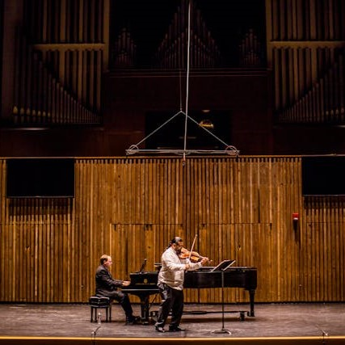
Método S. Suzuki
Shinichi Suzuki
El Método Suzuki para violín es un enfoque de enseñanza desarrollado por el famoso violinista japonés Shinichi Suzuki. Este método se basa en la idea de que cualquier niño puede aprender a tocar el violín si se le proporciona un entorno adecuado y se le enseña de manera sistemática desde una edad temprana. El método Suzuki es un gran mecanismo para aprender a tocar un instrumento musical. Está recopilado en la actualidad en pdfs y audios para piano, flauta dulce, flauta traversa, contrabajo, canto, violonchelo, violín, charango, arpa, viola, Tarka, mandela, guitarra y ocarina.
Este método es más orientado a niños pero no deja de ser bueno también para mayores que quieren iniciar a aprender a tocar su instrumento. El papel de los padres es muy importante. Cuando un niño aprende a decir sus primeras palabras, los padres actúan arduamente como profesores. Ellos son una ficha clave «profesores en el hogar» cuando el niño está aprendiendo a tocar un instrumento.
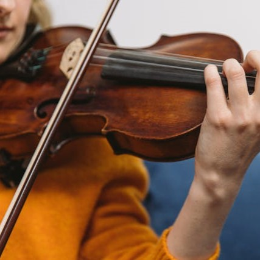
Método D. Alard
Delphin Alard
El Método D. Alard para violín es un enfoque de enseñanza desarrollado por Delphin Alard, un destacado violinista y profesor francés. Este método fue adoptado en el Conservatorio de París y se ha utilizado ampliamente en la enseñanza del violín. El método de Alard está clasificado en ocho cursos, siguiendo la práctica adoptada en todos los conservatorios. Cada curso se centra en diferentes aspectos de la técnica del violín, permitiendo a los estudiantes progresar de manera sistemática y metódica. El método de Alard se caracteriza por su enfoque en la técnica del violín.
Los ejercicios y estudios están diseñados para ayudar a los estudiantes a dominar las habilidades técnicas esenciales del violín, como la velocidad de los dedos, la coordinación del arco y los dedos, los cambios de posición, la independencia entre los dedos, las dobles cuerdas, el vibrato, la afinación, entre otros. Además de los ejercicios técnicos
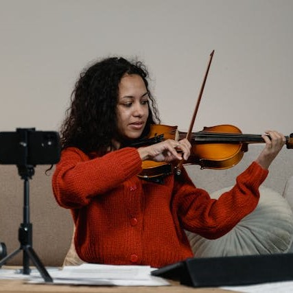
Método Laoureux
Nicolás Laoureux
El Método Laoureux para violín es un enfoque de enseñanza desarrollado por Nicolás Laoureux. Este método está lleno de ejercicios de todo tipo, con el se puede llegar a un nivel muy avanzado. El método Laoureux es una buena opción para aquellos adultos que quieren empezar progresivamente a aprender violín, pero no les interesa tanto la musicalidad de lo que tocan, y entienden que con la técnica adecuada, luego podrán tocar lo que quieran. Este método comprende los principios fundamentales de la técnica, abarcando desde la correcta posición del violín y arco hasta los estudios de arpegios, saltillos y diversas escalas mayores.
Los ejercicios y estudios están diseñados para ayudar a los estudiantes a dominar las habilidades técnicas esenciales del violín, como la velocidad de los dedos, la coordinación del arco y los dedos, los cambios de posición, la independencia entre los dedos, las dobles cuerdas, el vibrato, la afinación, entre otros.
Grandes artistas
Nombre
Artista
Descripción
Arcangelo Corelli
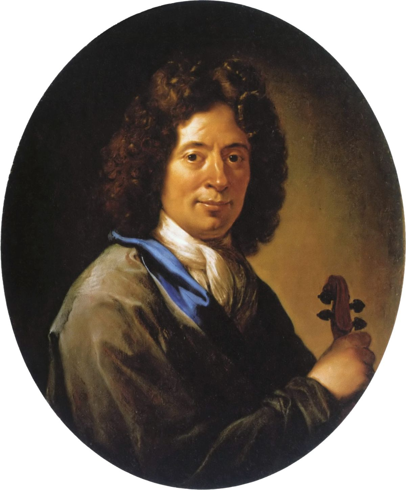Corelli fue uno de los primeros en aplicar plenamente, con un propósito expresivo y estructurante, el nuevo sistema tonal recientemente consolidado después de al menos doscientos años de experimentación. Como violinista virtuoso fue considerado uno de los más grandes de su generación y contribuyó, a colocar el violín entre los instrumentos solistas más prestigiosos.
Francesco Veracini
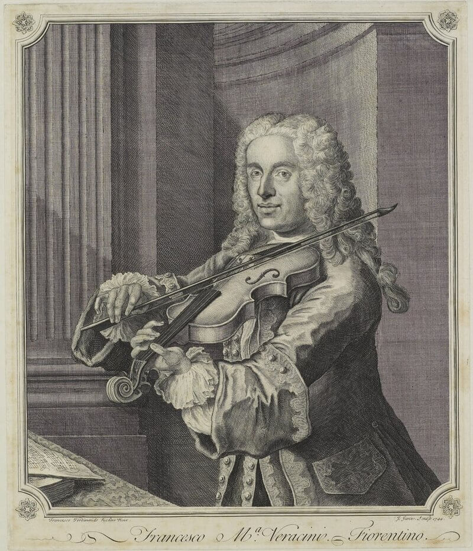Veracini viajó y trabajó en varias ciudades europeas, incluyendo Venecia, Londres, Düsseldorf y Praga. En Venecia, escribió un conjunto de sonatas para violín dedicadas al Príncipe Federico Augusto (futuro Augusto III de Polonia). En Londres, sus interpretaciones en los entreactos de las óperas representadas en el Queen´s Theatre de Westminster suscitaron gran entusiasmo del público.
Antonio Vivaldi
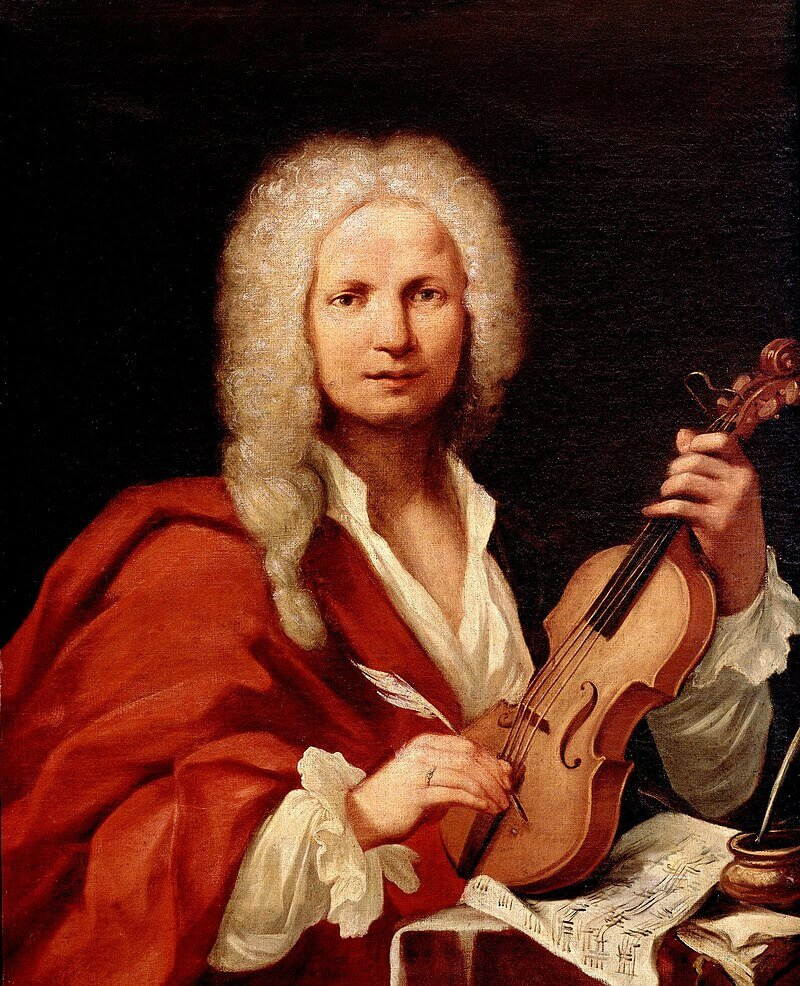Es especialmente popular como autor de la serie de conciertos para violín y orquesta Las cuatro estaciones. Muchas de sus composiciones las escribió para el conjunto musical femenino del Ospedale della Pietà, un hogar para niños abandonados. Vivaldi había trabajado allí como sacerdote católico durante dieciocho meses y estuvo empleado de 1703 a 1715 y de 1723 a 17401.
Fracesco Geminiani
Londres se había convertido en un importante centro musical europeo, gracias en parte a Haendel, quien había estudiado en Roma bajo Corelli y así trajo una medida del estilo musical italiano con él. Geminiani ganó mucho apoyo de la aristocracia y las figuras principales en la Corte Real, y fue invitado a tocar el violín ante George I, acompañado al clavecín por nada menos que Handel.
Jean-Marie Leclair
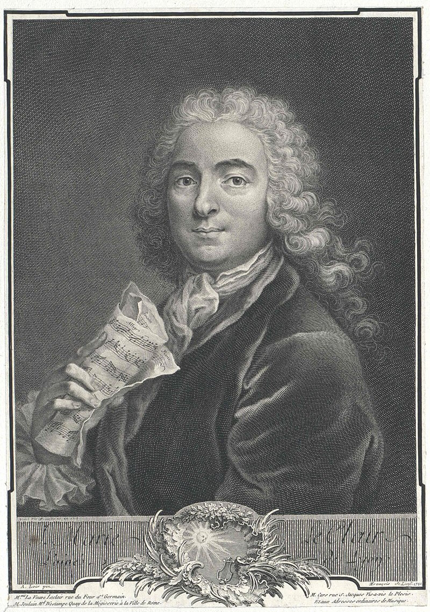También conocido como “Leclair el Viejo”, fue un destacado violinista y compositor francés del período barroco. Nacido en Lyon, Francia, Leclair es considerado el fundador de la escuela francesa de violín. Leclair estudió danza y violín en Turín, donde se convirtió en discípulo de Giovanni Battista Somis, quien a su vez fue alumno de Arcangelo Corelli1. Por esta razón, a menudo se le conoce como "El Corelli de Francia"
Niccolò Paganini
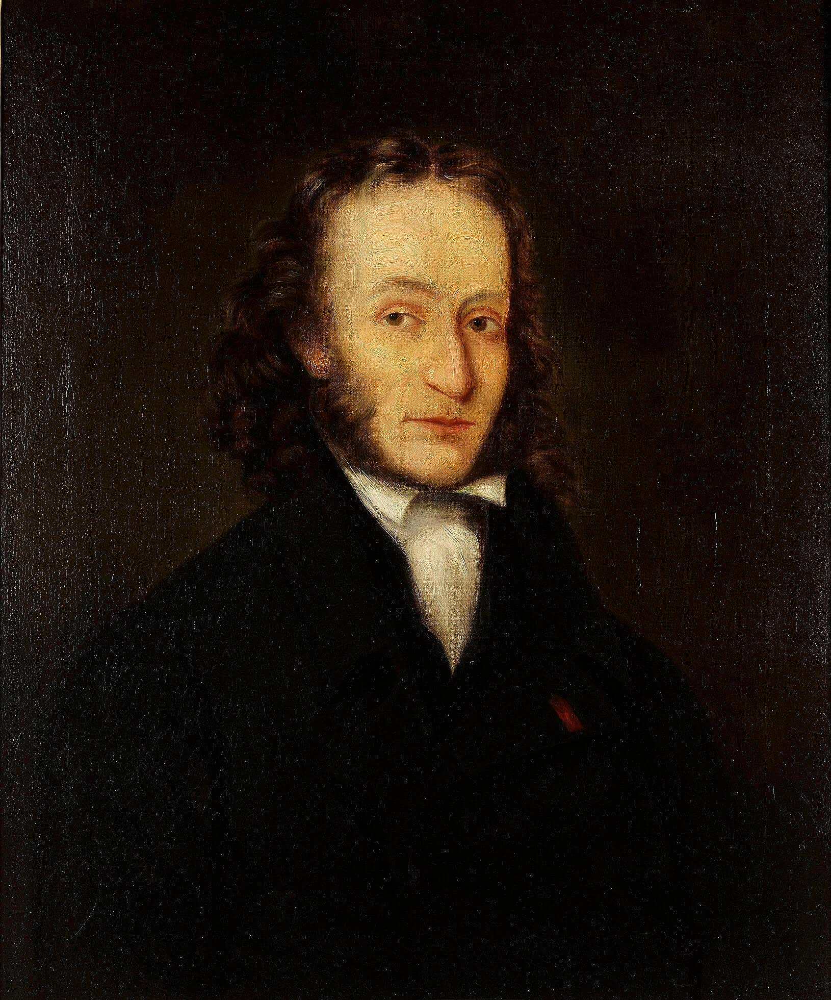Contribuyó con sus aportaciones al desarrollo de la «técnica moderna del violín». Paganini dominó todos los secretos del violín antes de cumplir los catorce años, al extremo de que sus profesores reconocían no tener nada más que enseñarle.
Tuvo como maestros a Giovanni Servetto y Alessandro Rolla.
Los “24 Caprichos para violín” son una de sus obras más conocidas y han servido de inspiración a numerosos compositores.
Itzhak Perlman
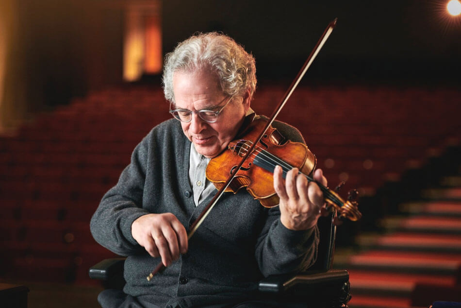Es un reconocido violinista, director de orquesta y maestro israelí. Considerado uno de los mejores violinistas del mundo, Perlman ha tenido una carrera internacional brillante desde que ganó la Leventritt Competition en 1964.
A lo largo de su carrera, Perlman ha realizado numerosas giras y ha actuado con frecuencia en conciertos junto al violinista estadounidense de origen israelí Pinchas Zuckerman.
Consejos de aprendizaje
001
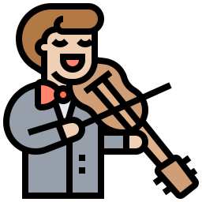
Práctica regular
La práctica regular del violín es esencial para mejorar tus habilidades. Intenta establecer una rutina diaria de práctica, incluso si solo puedes dedicar un corto período de tiempo cada día. Recuerda, es más beneficioso practicar un poco todos los días que hacer largas sesiones de práctica de manera esporádica.
Ten en cuenta que el progreso puede ser lento y a veces puede parecer que no estás avanzando. Sin embargo, cada minuto que pasas practicando está contribuyendo a tu desarrollo como violinista. Mantén la paciencia y sigue adelante, ¡tu esfuerzo dará sus frutos con el tiempo!
002
Relajación
El violín es un instrumento que requiere una gran precisión y control, lo que puede llevar a la tensión muscular si no se maneja correctamente. Aquí hay algunas sugerencias para mantener la relajación física:
Postura: Mantén una postura correcta y cómoda. Tu espalda debe estar recta, los hombros relajados y el cuello sin tensión. El violín debe descansar suavemente sobre tu hombro y cuello, sin necesidad de sujetarlo con fuerza.
Respiración: La respiración profunda y controlada puede ayudarte a relajar los músculos y a mantener la concentración. Intenta incorporar ejercicios de respiración en tu rutina de práctica.
Pausas: Haz pausas regulares durante tu práctica para evitar la fatiga y la tensión muscular. Un descanso de 5-10 minutos cada media hora puede ser muy beneficioso.
Relajación mental: La relajación mental es igualmente importante cuando se toca el violín. Aquí hay algunas estrategias que puedes probar:
Mindfulness: La práctica de la atención plena puede ayudarte a mantener la concentración en el momento presente y a reducir la ansiedad o la frustración. Intenta prestar atención a las sensaciones físicas mientras tocas, como el peso del violín en tu hombro o el tacto de las cuerdas bajo tus dedos.
Perspectiva positiva: Mantén una actitud positiva hacia tu práctica. Recuerda que cada desafío es una oportunidad para aprender y crecer como músico.
Paciencia: El progreso en el violín puede ser lento y requiere paciencia. No te desesperes si no ves mejoras inmediatas. Recuerda, cada pequeño paso que das te acerca a tu objetivo.
003
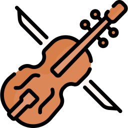
Calentamiento
Antes de comenzar a tocar el violín, es importante dedicar tiempo a calentar tanto tu cuerpo como tu mente. Aquí te dejo algunos consejos para un calentamiento efectivo:
Estiramientos corporales: Comienza con estiramientos generales para todo el cuerpo, prestando especial atención a las áreas que más utilizas al tocar el violín, como el cuello, los hombros, los brazos y las manos. Los estiramientos ayudan a preparar tus músculos para la actividad física y pueden prevenir lesiones.
Ejercicios de mano y dedos: Los ejercicios específicos para las manos y los dedos pueden ayudarte a mejorar la flexibilidad y la agilidad. Prueba con ejercicios de estiramiento de dedos, rotaciones de muñeca y apretones de mano.
Respiración: La respiración profunda y controlada puede ayudarte a relajarte y concentrarte. Intenta inhalar lentamente contando hasta cuatro, mantener la respiración contando hasta cuatro y luego exhalar contando hasta cuatro. Repite este ejercicio varias veces.
Escalas y arpegios: Tocar escalas y arpegios es una excelente manera de calentar tus dedos y tu mente. Te permite concentrarte en la técnica básica antes de pasar a piezas más complejas.
Estudios técnicos: Los estudios técnicos, como los de Kreutzer, Sevcik o Schradieck, son excelentes para calentar y desarrollar habilidades técnicas específicas.
Mentalmente: Antes de tocar, tómate un momento para mentalizarte. Piensa en lo que quieres lograr durante tu sesión de práctica y visualízate tocando con éxito.
Recuerda, el calentamiento es una parte crucial de tu rutina de práctica y no debe ser ignorado. Al igual que un atleta se calienta antes de un entrenamiento o una competencia, los músicos deben calentar antes de practicar o actuar. ¡Buena suerte con tu práctica!
004
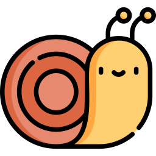
Práctica lenta
La práctica lenta en el violín es una técnica efectiva para mejorar tu habilidad en este instrumento. Comienza tocando las nuevas piezas a un ritmo lento para concentrarte en cada nota y en la técnica correcta. Presta atención a los detalles como la afinación, la dinámica, el fraseo y la articulación. Mantén una velocidad constante durante toda tu práctica lenta y utiliza un metrónomo para mantener un ritmo constante y aumentar gradualmente la velocidad.
Recuerda que la práctica lenta requiere paciencia, pero es crucial para el aprendizaje. Una vez que puedas tocar la pieza de manera limpia y precisa, puedes comenzar a aumentar la velocidad poco a poco. ¡Buena suerte con tu práctica!
005
Aprende de los errores
Los errores son una parte natural e inevitable del proceso de aprendizaje. No te desanimes, es importante recordar que todos los músicos, desde principiantes hasta profesionales, cometen errores. No te desanimes si cometes un error. En lugar de eso, trata de verlo como una oportunidad para aprender y mejorar.
Cuando cometas un error, tómate un momento para analizar qué salió mal. ¿Fue un problema de técnica, de ritmo, de afinación? ¿Estabas distraído o nervioso? Al entender la causa de tus errores, puedes tomar medidas para evitar repetirlos en el futuro. La práctica consciente implica prestar atención a lo que estás haciendo y cómo lo estás haciendo. Esto te permite notar tus errores y trabajar en ellos de inmediato, en lugar de repetirlos sin darte cuenta.
Busca feedback: Un profesor de violín o un compañero de música pueden proporcionarte una valiosa retroalimentación sobre tus errores y sugerir formas de corregirlos. Si no tienes acceso a un profesor o compañero, puedes grabarte a ti mismo tocando y luego escuchar la grabación para identificar áreas de mejora.
Aprender de los errores no significa que debas centrarte solo en lo negativo. También es importante celebrar tus logros y reconocer tu progreso. Cada error que superas es un paso más hacia tu objetivo de convertirte en un mejor violinista.
Recuerda, el objetivo no es la perfección, sino el progreso constante. ¡Sigue practicando y no te rindas!
006
Clases
Tomar clases de violín puede ser una excelente manera de mejorar tus habilidades y obtener una guía valiosa. Es importante encontrar un profesor que se adapte a tus necesidades y objetivos. Busca un profesor con experiencia, paciencia y una buena reputación. No dudes en cambiar de profesor si sientes que no estás progresando como deberías.
Llega a cada clase habiendo practicado y preparado lo que se te asignó en la última lección. Esto te permitirá aprovechar al máximo cada clase. No tengas miedo de hacer preguntas o pedir aclaraciones durante las clases. Recuerda, el objetivo de las clases es aprender, y tu profesor está allí para ayudarte.Las clases son solo una parte del aprendizaje.
La práctica regular entre las clases es esencial para mejorar. Aprender a tocar el violín lleva tiempo y esfuerzo. No te desesperes si el progreso es lento. Con paciencia y persistencia, mejorarás con el tiempo. Recuerda, el objetivo es disfrutar del proceso de aprendizaje y la música que puedes crear. ¡Buena suerte con tus clases de violín!
007
¡Disfruta!
Disfrutar tocando el violín es una parte esencial de la experiencia musical. Aquí tienes un consejo:
Encuentra alegría en la música: Tocar el violín no debería ser solo una tarea o un desafío, sino también una fuente de alegría y satisfacción. Escoge piezas que te gusten y te inspiren. No te limites a las asignaciones de tu profesor o a los ejercicios técnicos. Explora diferentes géneros y estilos de música.
Tómate tu tiempo: No te apresures a aprender nuevas piezas o técnicas. Disfruta del proceso de aprendizaje y celebra tus logros, por pequeños que sean.
Toca para ti: No tienes que tocar para un público o para impresionar a los demás. Toca para ti mismo, por el simple placer de hacer música.
Experimenta: No tengas miedo de experimentar y probar cosas nuevas en tu práctica. Esto puede incluir improvisar, componer tu propia música, o incluso tocar con otros instrumentos.
Recuerda, el objetivo final de tocar el violín es disfrutar de la música y expresarte a través de ella. ¡Disfruta de tu viaje musical! 🎻.